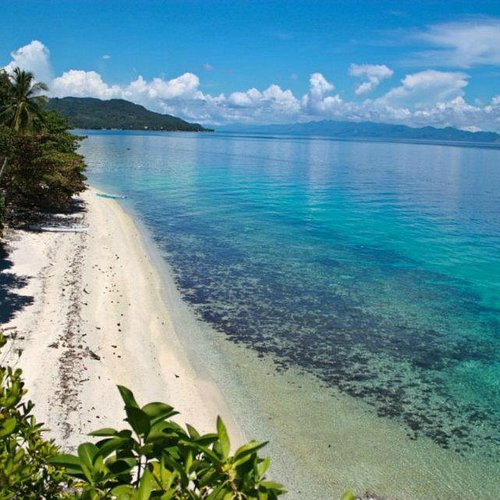

Beyond its well-known destinations, Leyte is home to a number of hidden beaches waiting to be discovered. These lesser-known spots offer quiet shores, untouched scenery, and a more peaceful coastal experience—perfect for travelers looking to escape the crowds and enjoy nature at its most serene.

Hidden beaches in Leyte are often found in remote coastal towns and less developed areas, making them ideal for those seeking privacy and tranquility. Places near Canigao Island and along the coastlines of Southern Leyte feature secluded stretches of sand with clear waters and minimal tourist presence. These locations may require a bit more effort to reach, but the reward is a quiet and unspoiled environment.
What makes these beaches special is their natural charm and simplicity. With fewer facilities and less commercial development, visitors can fully appreciate the sound of the waves, the fresh sea breeze, and the beauty of the landscape. Whether you’re exploring by boat or discovering a hidden cove by land, these beaches provide a more intimate and authentic coastal experience.

Hidden beaches in Leyte are often located in less developed coastal areas.
These beaches usually have limited facilities, preserving their natural state.
Visiting hidden beaches often involves short boat rides or off-the-beaten-path travel.